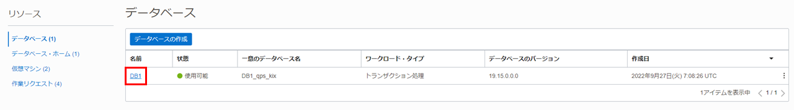
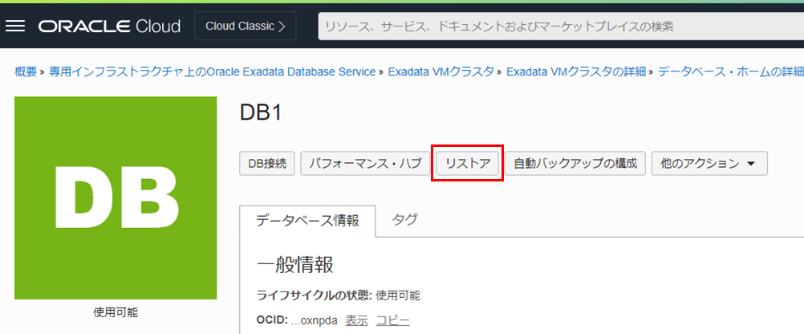
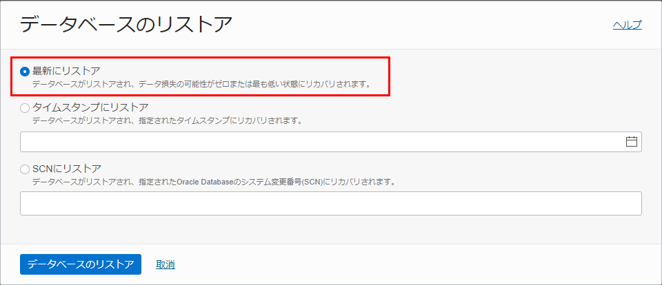
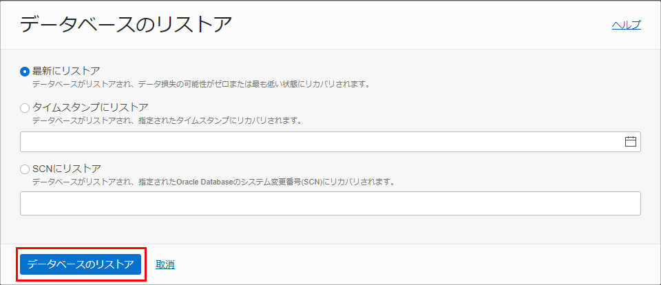
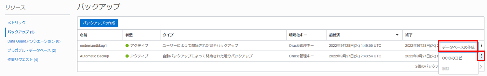
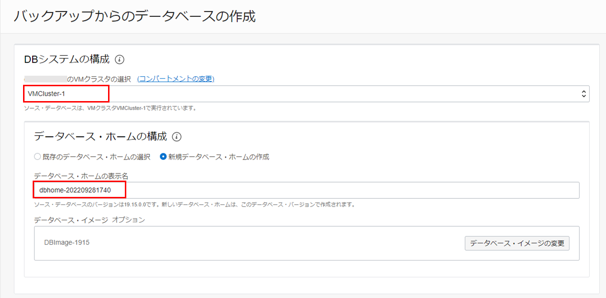
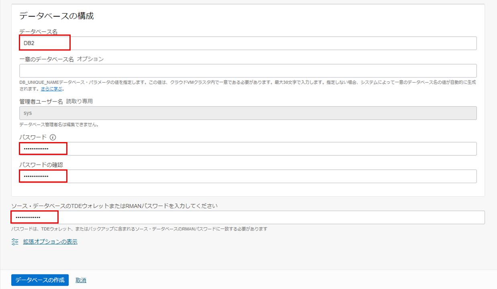
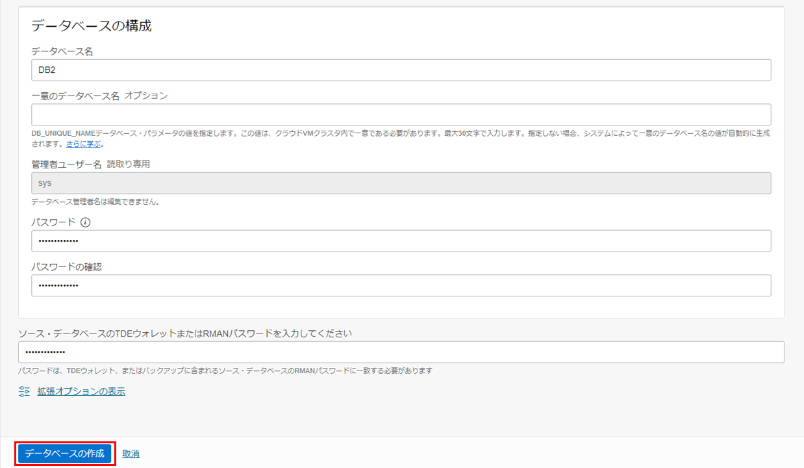
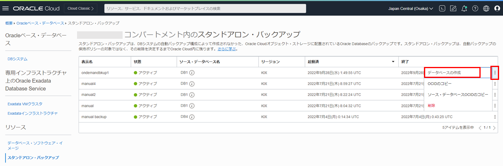

はじめに
Oracle Cloud Infrastructure Exadata Database Service on Dedicated Infrastructure (ExaDB-D) では、自動バックアップ機能やオンデマンドバックアップにて取得したバックアップを利用する事で、最新時点やPoint in Time Recovery(PITR)の任意の時点まで復旧ができます。 また、バックアップ元のデータベースに対してリストアするだけでなく、別DBシステム上にリストアする事も可能です。 ここでは、OCI コンソールからリストアする手順についてご紹介します。
目次 :
前提条件 :
-
101 : ExaDB-Dを使おうを通じてExaDB-Dの作成が完了していること
-
103 : 自動バックアップを設定しようを通じてバックアップを取得していること
所要時間 : 約1時間 ※環境によって異なるため、参考値です
1. バックアップ元のデータベースに対してリストア
まずはバックアップ元のデータベースに対してリストアしてみましょう。 リストア方法には下記3つがありますので、リストアしたい地点に応じてどのリストア方法を利用するか検討してください。
-
最新にリストア
データ損失の可能性が最も低い、直近の正常な状態にデータベースをリストアします。 -
タイムスタンプにリストア
指定した日時にデータベースをリストアします。 -
SCNにリストア
SCNを使用してデータベースをリストアします。
有効なSCNを指定する必要がありますので、データベース・ホストにアクセスして問い合せるか、オンラインまたはアーカイブ・ログにアクセスして使用するSCN番号を確認してください。
-
OCIコンソール・メニューから Oracle Database → Oracle Public Cloud上のExadata に移動します。

-
利用したいコンパートメントをリスト範囲のコンパートメントから選択します。

-
利用したいリージョンを右上のリージョンの折りたたみメニューをクリックして、リージョンの一覧から選択します。

-
リストアしたいExadata VMクラスタの表示名をクリックします。

-
データベースの一覧から対象のデータベースの名前をクリックします。

-
画面上部からリストアボタンをクリックします。

-
データベースのリストアダイアログで、リストア方法を選択します。(本ガイドでは、最新にリストアを選択します。)

-
データベースのリストアボタンをクリックします。

リストア作業が完了するとステータスが更新中から使用可能に変わります
2. バックアップから新規データベースとしてリストア
続いて、取得したバックアップを利用して新規データベースとしてリストアする手順を紹介します。
-
対象のデータベースのデータベース詳細ぺージのバックアップをクリックします。
-
リストア対象のバックアップの右側にあるアクション・アイコン(3つのドット)から、データベース作成をクリックします。

- バックアップからのデータベースの作成ダイアログに以下の情報を入力します。
- DBシステムの構成
- [コンパートメント名]のVMクラスタの選択 - リストア先のVMクラスタを選択します。
- データベース・ホームの構成 - 既存のデータベース・ホームの選択か新規データベース・ホームの作成を選択します。新規データベース・ホームの作成を選択の場合、任意のデータベース・ホームの表示名とデータベース・イメージを選択します。

- データベースの構成
- データベース名 - 任意
- 一意のデータベース名 - 任意もしくはなしでも可能
- パスワード - 任意
- パスワードの確認 - 任意
- ソース・データベースのTDEウォレットまたはRMANパスワードを入力してください - リストア対象のデータベースのTDEウォレットまたはRMANパスワードを入力します。

設定後、データベースの作成をクリックします。

- DBシステムの構成
データベースの作成がバックエンドで開始します。作業が完了するとステータスが更新中から使用可能に変わります。
3. オンデマンドバックアップを使用したリストア
-
コンソールメニューからOracle Database → Oracle Public Cloud上のExadataを選択し、スタンドアロン・バックアップをクリックします。
-
リストア対象のバックアップの右側にあるアクション・アイコン(3つのドット)から、データベース作成をクリックします。

-
バックアップからのデータベースの作成ダイアログに情報を入力します。設定方法は2. バックアップから新規データベースとしてリストアの3.と同様です。
データベースの作成がバックエンドで開始します。作業が完了するとステータスが更新中から使用可能に変わります。
以上で、この章の作業は完了です。
参考資料
- Oracle Cloud Infrastructure Documentation - Oracle Exadata Database Service on Dedicated Infrastructure
- Oracle Cloud Infrastructure Exadata Database Service on Dedicated Infrastructure (ExaDB-D) サービス詳細